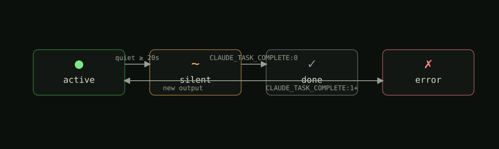
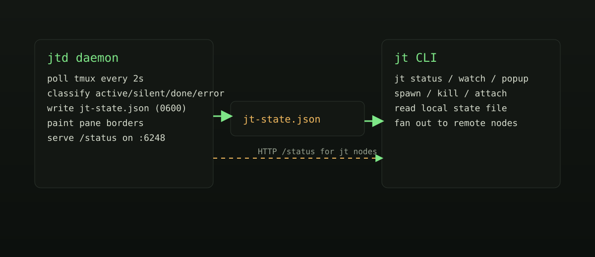

jt(1) — tmux pane status for AI agents
linux · arm64 · x86_64 · wsl2Name
jt — visual state for tmux sessions running AI agents.
Pane borders change color when a session needs attention; a sidebar shows what
each session is doing; jt nodes aggregates state across machines
over Tailscale.
Synopsis
jt [status] jt watch jt popup jt sidebar [on|off|toggle] jt spawn <name> <cmd> jt kill <name> jt attach <name> jt nodes
Description
If you run several AI agents at once — Claude Code, Codex CLI, an autonomous task runner, a long-build — each one usually lives in its own tmux session (a persistent shell that survives logout). The problem: you can only look at one session at a time, so it's hard to tell which agents are working, which are idle, and which are done without flipping through them.
jt turns each session's tmux pane border into a status
light: green while output is flowing, amber when it has been quiet for
more than 20 seconds, gray when finished, red on error. It also
gives you a sidebar with a live table of every session and a
jt nodes command that shows the same view across
machines.
Under the hood, two pieces:
jtd, a small background process (a
daemon) that polls tmux every two seconds,
classifies each session, repaints the pane border, and writes a JSON
state file; and jt, the CLI you actually
use, which reads that file directly so jt status is
instant. No third-party runtime dependencies. Linux, WSL2, ARM64. The
main session's pane border is never touched.
Screen
jamditis@houseofjawn:~$ jt status
houseofjawn 16:42:05
main active ● 52h claude
morning-wake active ● 4m claude
Checking email...
Found 1 transcript.
checkin-wake silent ~ 12m bash
No new transcripts.
cleanup-wake done ✓ 22s bash
CLAUDE_TASK_COMPLETE:0
jamditis@houseofjawn:~$
jt status output. The dot at morning-wake pulses while the agent is producing output; goes solid amber when it falls silent for more than 20 seconds.States
Every two seconds, each session is classified into one of four states.

- ●activeoutput produced in the last 20 seconds
- ~silentno output for 20 seconds or more
- ✓donea
CLAUDE_TASK_COMPLETE:0marker was written - ✗errora non-zero exit code was written to the marker
The done/error states are read from a marker line in
/tmp/<prefix>_<unix_ts>.txt, where the timestamp matches the
tmux session's creation time within 60 seconds. The daemon scans two prefixes
by default — claude_scheduled (used by
claude-scheduler) and
codex_scheduled (used by Codex CLI scheduler wrappers). Set
JT_OUTPUT_FILE_PREFIXES=claude_scheduled,codex_scheduled,my_runner to add your own.
Sessions without a matching log only move between active and silent.
Glossary
Terms used elsewhere on this page, briefly defined.
- tmux
- terminal multiplexer; lets you keep many shells open inside one terminal window, with sessions that survive logout
- session
- a single tmux instance with one or more windows and panes;
jtwatches one per agent - pane
- a region inside a tmux split;
jtchanges its border color to signal status - daemon
- a long-running background process; here,
jtdlaunched by your user's systemd - systemd user service
- a unit run by Linux's service manager under your account, started on login and restarted on crash
- Tailscale
- a private mesh VPN that gives every machine a stable IP in the
100.64.0.0/10range;jt nodesuses it to talk to other machines without exposing them to the public internet - $XDG_RUNTIME_DIR
- a per-user, per-login temporary directory (e.g.
/run/user/1000); the state file lives there because it is private to you and wiped on logout - marker
- the literal line
CLAUDE_TASK_COMPLETE:0(or:1for failure) appended to an agent's log when it finishes; the daemon reads it from/tmp/claude_scheduled_<unix_ts>.txtor/tmp/codex_scheduled_<unix_ts>.txt(or any prefix listed inJT_OUTPUT_FILE_PREFIXES) with a timestamp matching the session's creation time within 60 seconds; this is what flips a session todoneorerror
Install
Requires Python 3.11+, tmux 3.0+, and systemd. Tested on Linux ARM64 (Raspberry Pi), x86_64, and WSL2.
# clone, install Python entry points, register systemd user service git clone https://github.com/jamditis/jawn-tmux.git ~/projects/jawn-tmux cd ~/projects/jawn-tmux ./install.sh # verify systemctl --user status jtd jt status
The installer is idempotent: re-running it is safe. It appends a
source-file line to ~/.tmux.conf only if missing,
installs the systemd unit to ~/.config/systemd/user/, and
starts jtd.
Keybindings
Bindings come from tmux/jt.conf, sourced from your tmux config.
- Ctrl+B a
- open a status popup; q closes, k prompts to kill a session by name
- Ctrl+B Shift+A
- toggle a 36-column sidebar pane running
jt watch
Commands
- jt [status]
- print a table of local sessions with status, elapsed time, and tail
- jt watch
- re-render every two seconds; used by the sidebar pane
- jt popup
- interactive overlay via
tmux display-popup - jt sidebar [on|off|toggle]
- toggle the sidebar pane
- jt spawn <name> <cmd>
- create a named tmux session running cmd
- jt kill <name>
- kill a tmux session
- jt attach <name>
- attach to a session
- jt nodes
- fetch state from configured nodes concurrently and render them together
All read-only commands consult the local state file directly — no subprocess
per query — so jt status is roughly a JSON parse plus a
format pass.
Architecture

jtd) and many readers (jt commands and remote node fetches).
Two processes. jtd writes; everything else reads. State lives
in $XDG_RUNTIME_DIR/jt-state.json (with a /tmp
fallback) and is written atomically with mode 0600.
jtd binds :6248 to 127.0.0.1 by
default — the state JSON contains session names and the last few output
lines, so the listener stays local until you opt in. To enable
cross-node aggregation, set JT_BIND to your Tailscale IP
(or 0.0.0.0 if the host is firewalled to a private
interface) and restart the daemon.
State file
// written by jtd every 2 seconds, mode 0600 { "node": "houseofjawn", "updated_at": 1740000000, "sessions": { "morning-wake": { "status": "active", // active | silent | done | error "command": "codex", "elapsed_secs": 720, "last_activity_secs": 8, "output_tail": ["Checking email...", "Found 1 transcript."], "output_file": "/tmp/codex_scheduled_1740000000.txt" } } }
Cross-node setup
List your machines in ~/.config/jt/nodes.json:
[
{ "name": "houseofjawn", "ip": "100.64.0.11", "port": 6248 },
{ "name": "officejawn", "ip": "100.64.0.12", "port": 6248 }
]
On each node, drop in a unit override and restart the daemon so it re-binds:
# open an editor for ~/.config/systemd/user/jtd.service.d/override.conf systemctl --user edit jtd # in the editor: [Service] Environment=JT_BIND=<tailscale-ip> # then reload + restart so the new JT_BIND takes effect systemctl --user daemon-reload systemctl --user restart jtd
Unreachable nodes do not block the others — they appear in the rendered output as such.
Files
- $XDG_RUNTIME_DIR/jt-state.json
- local state written by
jtd(falls back to/tmp/jt-state.json) - ~/.config/jt/nodes.json
- cross-node configuration; missing file means no remote nodes
- ~/.config/systemd/user/jtd.service
- systemd user unit installed by
install.sh - tmux/jt.conf
- keybindings, sourced from
~/.tmux.conf
Environment
- JT_BIND
- HTTP bind interface for
jtd; default127.0.0.1 - JT_PORT
- HTTP port; default
6248 - JT_STATE_FILE
- override state file path; default
$XDG_RUNTIME_DIR/jt-state.json - XDG_RUNTIME_DIR
- directory used for the state file when
JT_STATE_FILEis not set
See also
- cmux(1)
- visual state for AI agent workflows on macOS+Ghostty — the inspiration for this project
- tmux(1)
- the underlying terminal multiplexer
- jamditis/jawn-tmux
- source, issues, releases
- CONTRIBUTING.md
- how to set up the dev environment and submit a PR